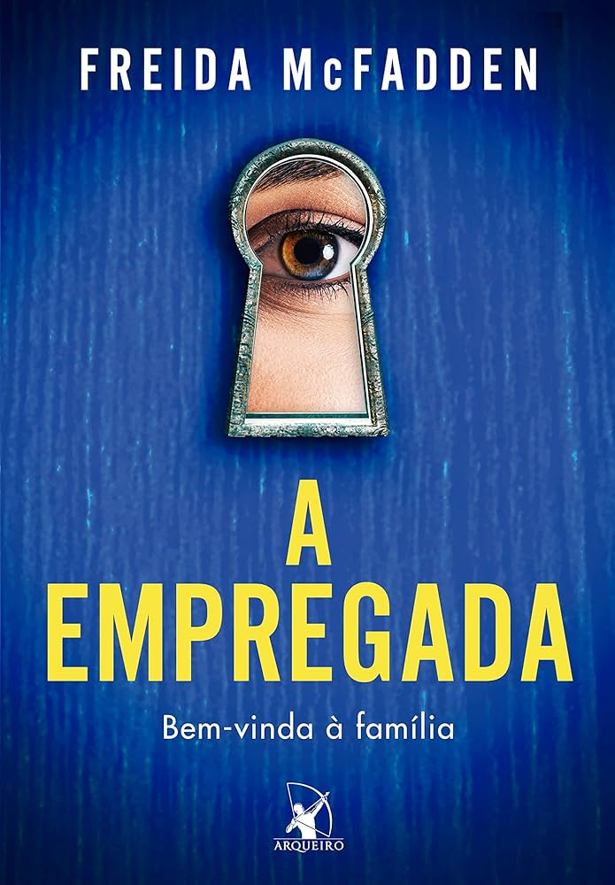

Ela só queria um emprego. Mas acabou entrando na vida de uma família onde cada segredo pode ser mortal. Recém-desempregada e sem ter onde morar, Millie aceita o que parece ser a oportunidade perfeita: trabalhar como empregada na luxuosa casa dos Winchester. Com um quarto confortável no sótão, boa comida e um salário justo, tudo parece bom demais para ser verdade. E é. Nina Winchester é bela, elegante… e completamente instável. Um dia é gentil, no outro cruel. O senhor da casa, Andrew, é charmoso, mas distante. E a filha do casal, uma menina doce à primeira vista, parece esconder algo nos olhos. Conforme os dias passam, Millie começa a desconfiar que há algo muito errado naquela casa. Portas trancadas, conversas sussurradas, atitudes suspeitas — e um passado que ameaça voltar à tona. Mas Millie também guarda seus próprios segredos.
A empregada é um livro de suspense e mistério escrito por Freida McFadden, é uma escritora americana de sucesso e médica especializada em lesões cerebrais. Ganhou destaque mundial com o thriller psicológico "A Empregada" (The Housemaid), lançado em 2022, que vendeu mais de dois milhões de cópias e se tornou um fenômeno nas listas de mais vendidos. Apesar da fama como autora, McFadden leva uma vida discreta, usando um pseudônimo para manter separadas suas carreiras médica e literária. Ela vive com o marido, dois filhos e um gato preto nos arredores de Boston. Além de A Empregada, publicou suas continuações (O Segredo da Empregada e A Empregada Está de Olho), e já tem uma adaptação cinematográfica prevista para 2025, estrelada por Sydney Sweeney e Amanda Seyfried. Com mais de 20 livros lançados, McFadden é conhecida por suas tramas cheias de mistério, tensão e reviravoltas surpreendentes.
